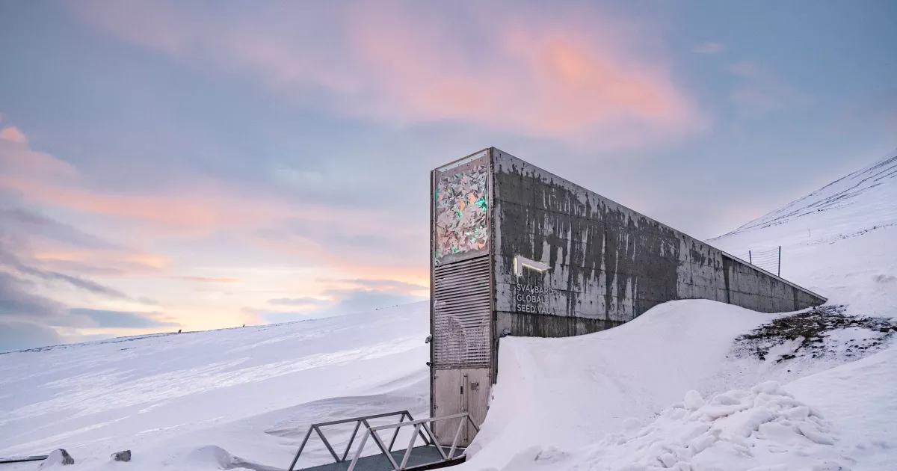

The Story
As the world faces the unpredictable challenges of climate change, natural disasters, and human conflict, the fragile tapestry of global agriculture is constantly under threat. To protect against the irreversible loss of botanical diversity, humanity built a "Doomsday Vault." Carved nearly 400 feet into solid rock, the vault relies on the natural permafrost of the Arctic. Even if power systems fail, the seeds will remain safely frozen and viable for centuries, waiting until they are needed to restore a shattered ecosystem.
The scale of this biological library is staggering. It holds duplicate samples of seeds from gene banks all over the world. From ancient, drought-resistant varieties of wheat to obscure, disease-resistant strains of rice, the vault captures the genetic history of human agriculture. These dormant seeds carry the specific genetic traits that future generations might desperately need to breed crops capable of surviving new diseases or extreme weather shifts.
Perhaps the most remarkable aspect of the Seed Vault is what it represents socially. In a world often divided by borders and politics, countries from every corner of the globe—even nations currently in conflict with one another—send their seeds to rest side by side in the ice. It stands as a quiet, powerful monument to global cooperation, proving that when it comes to the fundamental survival of life on Earth, humanity can still work together toward a shared, long-term horizon.

Philosophical Questions
What does it mean to plan for a future we might not see?
The architects and scientists who maintain the Seed Vault are preserving life for generations hundreds of years from now. It is an act of profound generational responsibility.
This challenges the modern obsession with short-term gains, asking us instead to consider our role as temporary stewards of the planet, duty-bound to protect the future.
Is our greatest strength found in diversity?
Monoculture—growing only one type of highly productive crop—makes our food systems incredibly vulnerable to a single disease. The vault proves that true resilience lies in preserving every unique, odd, and rare genetic variation.
This mirrors human society as well, reminding us that diversity is not just a moral ideal, but a biological necessity for survival and adaptation.
Can human engineering and nature work in perfect harmony?
Instead of relying purely on complex machinery to keep the seeds cold, the vault uses the natural freezing environment of the Arctic mountain to do the heavy lifting.
It serves as a beautiful example of how the best technological solutions are often those that partner with nature's existing forces, rather than trying to overpower them.